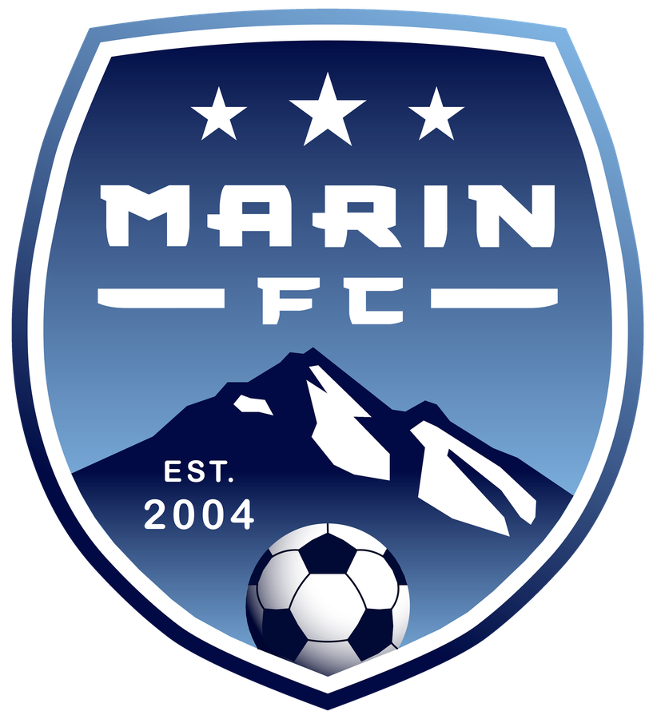

PAC83
PAS61
DEF58
SHO82
DRI78
PHY81
5 games · ~253 min
Marin FC B2013-14 Blue · Veo analytics
FC-style player cards for every rostered player with Veo player data in the most recent 5 games (San Juan, MVLA, Newark, Folsom, Davis), updated through Nov 15, 2026. Ratings are squad percentiles from tagged Veo numbers.
These cards use the most recent 5 games (San Juan, MVLA, Newark, Folsom, Davis). None of these games includes a Saves column, so the goalkeeper card has no overall. When a new game is added, the cards move to the new most recent 5 games.
Sorted by overall. For most players, position is the role most often listed in these games. For some players it is set to the team's current role, with occasional positions shown in smaller type; overall uses the main position's formula. PAC = season-best top speed and high-intensity runs; SHO = attempts and goals; PAS = completion, weighted turnovers (v2) and involvement; DRI = dribble attempts; DEF = interceptions, tackles, recoveries; PHY = high-intensity runs and duels. Goalkeeper cards replace SHO and DRI with SAV (saves per 70). Card colour follows the overall: gold 70+, silver 65–69, bronze below. A card with no overall uses the club colours and shows a dash.

No card yet (no Veo player rows in these games): #16 Joshua.
Swipe or scroll sideways to see every column.
| Player | Role | G | Min | OVR | PAC | SHO | PAS | DRI | DEF | PHY | SAV |
|---|---|---|---|---|---|---|---|---|---|---|---|
| #27 Bruce | ST (RB, RW) | 5 | 253 | 79 | 83 | 82 | 61 | 78 | 58 | 81 | — |
| #7 Michael | RW | 5 | 234 | 70 | 58 | 77 | 74 | 75 | 52 | 64 | — |
| #10 Mateo | DM | 4 | 222 | 70 | 52 | 53 | 78 | 85 | 73 | 58 | — |
| #5 Brooks | CB | 5 | 347 | 69 | 67 | 55 | 64 | 52 | 78 | 58 | — |
| #45 Joe | LB | 5 | 284 | 69 | 73 | 58 | 58 | 82 | 70 | 73 | — |
| #42 Giancarlo | AM | 5 | 210 | 68 | 46 | 85 | 68 | 65 | 76 | 60 | — |
| #99 Miller | CM (ST) | 5 | 218 | 67 | 58 | 82 | 75 | 48 | 56 | 64 | — |
| #9 Santi | CM (ST) | 5 | 177 | 66 | 50 | 63 | 76 | 58 | 67 | 62 | — |
| #14 Lucien | RB | 2 | 87 | 66 | 84 | 60 | 61 | 88 | 50 | 66 | — |
| #50 Bradley | W | 5 | 191 | 65 | 81 | 49 | 70 | 55 | 82 | 76 | — |
| #28 Brody | ST/W | 5 | 145 | 63 | 76 | 57 | 71 | 42 | 54 | 79 | — |
| #54 Rylen | CDM (ST) | 5 | 288 | 63 | 76 | 78 | 57 | 45 | 58 | 80 | — |
| #20 Deacon | CDM | 4 | 155 | 60 | 53 | 62 | 54 | 72 | 78 | 43 | — |
| #23 Harry | CB | 5 | 306 | 59 | 71 | 52 | 51 | 62 | 58 | 61 | — |
| #17 Graham | CDM | 5 | 233 | 58 | 46 | 62 | 57 | 68 | 66 | 50 | — |
| #0 Julian | GK | 4 | 280 | — | — | — | — | — | — | — | — |